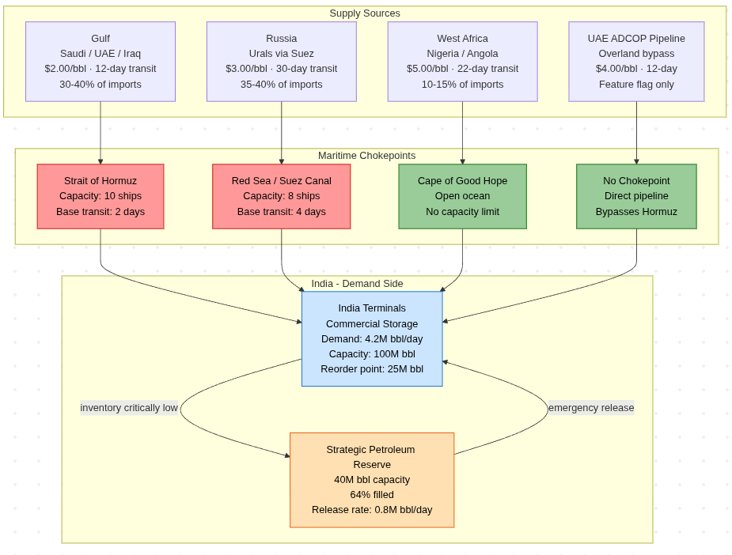

Course: CS572 — Simulation and Modelling
Live link: Click Here
Repository: github.com/AshwinG-23/OilSim
Info for detailed Rules: ReadME, Senarios and Features Explanation, Real world data sources
OilSim is a Discrete-Event Simulation (DES) of India's crude oil import supply chain. It models how different oil-buying strategies perform when maritime routes are disrupted — by conflicts, sanctions, or fleet losses. Given a scenario (e.g., Strait of Hormuz blockade) and a strategy (e.g., always buy cheapest), the simulator runs the supply chain forward in time and reports how many hours the country ran short of oil, how much it spent per barrel, and how well demand was met.
India imports roughly 85–90% of its crude oil, most of it passing through one of three maritime chokepoints: the Strait of Hormuz, the Red Sea/Suez Canal, or the Cape of Good Hope. A disruption at any of these points directly affects whether refineries keep running. The 2022 Russia–Ukraine war, the 2024 Houthi attacks on Red Sea shipping, and repeated Hormuz closure threats have all demonstrated that this is not a theoretical concern.
The core research question is: Does the sourcing strategy India uses matter, and under which conditions does it matter most? A cost-focused policy (always buy cheap Gulf oil) works perfectly in calm times but can cause severe shortages during a blockade. A resilience-focused policy (always route through Africa) avoids shortages but costs roughly 2.5× more per barrel even in peaceful periods. This simulation lets us quantify that trade-off.
The simulator is built using SimPy, a Python library for process-based discrete-event simulation. The entire physical system — tanker voyages, port inventory, chokepoint congestion, strategic reserves — is modelled as concurrent SimPy processes. Time advances in simulation hours; events such as a tanker completing a voyage or a chokepoint being disrupted are queued and processed in order.
The codebase is available on GitHub. A web-based dashboard (web/app.py) serves a live UI where scenarios can be configured and run interactively with Chart.js visualisations.

Clade Code was used for majority fo the coding part. A detailed plan was made first by my ideas and shared for it to implement. Almost all fo the dashbaord was built by it with my feedback. The simpy engine needed a lot of bug fixing and some were handled by me. A detailed log can be found at https://github.com/AshwinG-23/OilSim/blob/main/conversation_history.txt.
The simulator has five physical components, each implemented as a SimPy process:
| Component | What it models |
|---|---|
| Chokepoint | A maritime strait (Hormuz, Red Sea) with a capacity limit. Ships queue to transit. Disruptions lower throughput by reducing the status (0 = closed, 1 = normal). |
| Tanker / Fleet | 120 tankers managed as a shared pool. Each tanker completes a full voyage cycle: load at source → transit chokepoints → unload at port → return. |
| Port | India's crude terminals. Demand (4.2M bbl/day) drains inventory continuously. When inventory falls below a reorder point, the ordering policy fires. |
| SPR | India's Strategic Petroleum Reserve (25.6M bbl at 64% fill). Releases automatically when commercial inventory drops to a critical threshold. |
| Disruption Engine | Applies scenario events — lowering chokepoint status at a given start day for a given duration, cutting the fleet, or shutting down a source. |
The ordering loop runs every 24 simulation hours. If inventory is below the reorder point (25M bbl) and tankers are free, the policy places an order. This results in a tanker departing, spending time at sea, and delivering a cargo (1.5M bbl) back to the port inventory.
All parameters are calibrated to real-world data (see Section 5 — References for sources).
| Parameter | Value | Basis |
|---|---|---|
| Fleet size | 120 tankers | India charters ~100–150 crude tankers at any time [1] |
| Cargo per tanker | 1.5M bbl | Weighted average: VLCC (55%) + Suezmax (30%) + Aframax (15%) [2] |
| Daily demand | 4.2M bbl/day | India's crude imports ~4.0–4.5M bbl/day [3] |
| Initial inventory | 60M bbl | ~14 days forward cover at commercial terminals [4] |
| Max storage | 100M bbl | Combined commercial crude-tank capacity [4] |
| Reorder point | 25M bbl | ~6 days — triggers replenishment [4] |
| Gulf one-way transit | 12 days | Gulf–India sea leg, 10–14 days typical [5] |
| Russia one-way transit | 30 days | Baltic/Black Sea → Suez → India, 25–35 days [6] |
| Africa one-way transit | 22 days | West Africa → Cape of Good Hope → India [7] |
| Gulf freight cost | $2.00/bbl | PPAC price build-up sheets [8] |
| Russia freight cost | $3.00/bbl | Reflects post-2022 freight + insurance [9] |
| Africa freight cost | $5.00/bbl | West Africa–Asia freight under normal conditions [10] |
| SPR capacity | 40M bbl | Three caverns: Visakhapatnam, Padur, Mangaluru [11] |
| SPR fill level | 64% (25.6M bbl) | Government disclosure, ~3.37M tonnes filled [11] |
| SPR release rate | 0.8M bbl/day | Estimated based on pipeline throughput constraints [12] |
Transit under disruption. When a chokepoint's status falls below 1.0, transit time increases inversely:
transit_time = base_transit / chokepoint_status + queue_delayA status of 0.5 doubles transit time; status of 0.1 makes it 10× longer. Ships queue at the chokepoint resource in SimPy, so congestion compounds the delay as more ships pile up.
Disruption cost premium. When a tanker travels through a disrupted chokepoint, a war-risk multiplier is applied to the freight cost. At status 0.15, the multiplier reaches ×2.275 — consistent with insurance reports showing war-risk surcharges doubling or tripling base freight [13].
Four sources are modelled. The UAE ADCOP pipeline starts disabled and only activates via a feature flag.
| Source | Route | Chokepoints | Base Cost |
|---|---|---|---|
| Gulf (Saudi/UAE/Iraq) | Strait of Hormuz | Hormuz | $2.00/bbl |
| Russia (Urals via Suez) | Red Sea / Suez Canal | Red Sea | $3.00/bbl |
| West Africa (Nigeria/Angola) | Cape of Good Hope | None | $5.00/bbl |
| UAE ADCOP Pipeline | Overland bypass | None | $4.00/bbl |
Russia's route in the model goes via the Red Sea, not Hormuz. This means Houthi attacks on the Red Sea affect Russia shipments but not Gulf shipments — which matches the real-world 2024 routing pattern.
Four strategies are implemented in strategies/policy.py. All share the same reorder trigger (inventory < 25M bbl). They differ in which source they pick.
Cost-Focused — buy from the cheapest route that is not severely disrupted. A chokepoint must fall below 30% capacity before this strategy considers it "disrupted." It defaults to Gulf in almost every situation.
Diversified — cycle through all non-disrupted sources in rotation (round-robin). It treats a chokepoint as disrupted at 70% capacity, so it spreads orders earlier. No single source dominates.
Resilient — always prefer routes with zero chokepoints, sorted by chokepoint count then cost. Africa is the default choice in every scenario. A chokepoint at 90% capacity is already treated as "disrupted." This strategy never routes through a strait unless every chokepoint-free source is unavailable.
Adaptive — observes the average health of all chokepoints every 24 hours and switches its disruption threshold dynamically:
This means Adaptive pays cheap Gulf prices during peace and automatically shifts to safe routes as conditions deteriorate, without any manual tuning.
Ten scenarios are defined in config/params.py:
| Scenario | What happens |
|---|---|
no_disruption | Normal operations — baseline |
short_conflict | Hormuz at 50% for 30 days |
medium_blockade | Hormuz at 20% for 90 days |
long_war | Hormuz at 5% + Red Sea at 10% + 15 tankers lost |
all_out_war | Hormuz 2% + Red Sea 2% + Russia sanctioned + 65 tankers lost |
cape_disruption | Africa route closed + Hormuz 15% + Red Sea 20% |
houthi_red_sea | Red Sea at 40% for 60 days (modelled on 2024 Houthi attacks) |
russia_sanctions | Russia supply shut down for 100 days |
tanker_strike | 25 tankers permanently destroyed on day 10 |
stochastic_conflict | Random disruptions drawn from a Poisson process |
Eight optional extensions can be toggled at runtime: tanker breakdowns, demand elasticity, seasonal weather, panic ordering (bullwhip effect), information delay, SPR auto-refill, freight rate dynamics, and UAE pipeline bypass. All are off by default; the results in this report use the default (no flags active).
For each strategy × scenario combination, the simulator reports:
All results below are from runs of 100 simulated days with 40 independent replications per cell. Full results are in results.md.
| Scenario | Strategy | Shortage (h) | DFR | $/bbl | Cost ($B) |
|---|---|---|---|---|---|
| no_disruption | cost_focused | 0.0 | 1.000 | 2.00 | 0.76 |
| no_disruption | diversified | 0.0 | 1.000 | 3.32 | 1.26 |
| no_disruption | resilient | 0.0 | 1.000 | 5.00 | 1.87 |
| no_disruption | adaptive | 0.0 | 1.000 | 2.00 | 0.76 |
| short_conflict | cost_focused | 0.0 | 1.000 | 2.57 | 0.91 |
| short_conflict | diversified | 0.0 | 1.000 | 3.58 | 1.34 |
| short_conflict | resilient | 0.0 | 1.000 | 5.00 | 1.87 |
| short_conflict | adaptive | 0.0 | 1.000 | 2.71 | 1.03 |
| medium_blockade | cost_focused | 402.8 | 0.832 | 2.63 | 0.67 |
| medium_blockade | diversified | 0.0 | 1.000 | 3.86 | 1.44 |
| medium_blockade | resilient | 0.0 | 1.000 | 5.00 | 1.87 |
| medium_blockade | adaptive | 0.0 | 1.000 | 3.54 | 1.34 |
| long_war | cost_focused | 0.0 | 1.000 | 4.58 | 1.66 |
| long_war | diversified | 0.0 | 1.000 | 4.76 | 1.78 |
| long_war | resilient | 0.0 | 1.000 | 5.00 | 1.87 |
| long_war | adaptive | 0.0 | 1.000 | 4.66 | 1.72 |
| all_out_war | cost_focused | 136.0 | 0.943 | 5.00 | 1.42 |
| all_out_war | diversified | 136.0 | 0.943 | 5.00 | 1.42 |
| all_out_war | resilient | 136.0 | 0.943 | 5.00 | 1.42 |
| all_out_war | adaptive | 136.0 | 0.943 | 5.00 | 1.42 |
| cape_disruption | cost_focused | 1093.7 | 0.544 | 4.55 | 0.34 |
| cape_disruption | diversified | 869.6 | 0.638 | 5.24 | 0.68 |
| cape_disruption | resilient | 1094.2 | 0.544 | 4.55 | 0.34 |
| cape_disruption | adaptive | 1095.6 | 0.543 | 4.55 | 0.34 |
| houthi_red_sea | cost_focused | 0.0 | 1.000 | 2.00 | 0.76 |
| houthi_red_sea | diversified | 0.0 | 1.000 | 3.50 | 1.32 |
| houthi_red_sea | resilient | 0.0 | 1.000 | 5.00 | 1.87 |
| houthi_red_sea | adaptive | 0.0 | 1.000 | 3.50 | 1.32 |
| russia_sanctions | cost_focused | 0.0 | 1.000 | 2.00 | 0.76 |
| russia_sanctions | diversified | 0.0 | 1.000 | 3.38 | 1.28 |
| russia_sanctions | resilient | 0.0 | 1.000 | 5.00 | 1.87 |
| russia_sanctions | adaptive | 0.0 | 1.000 | 2.00 | 0.76 |
| tanker_strike | cost_focused | 428.7 | 0.821 | 3.24 | 0.75 |
| tanker_strike | diversified | 0.0 | 1.000 | 3.79 | 1.44 |
| tanker_strike | resilient | 0.0 | 1.000 | 5.00 | 1.87 |
| tanker_strike | adaptive | 0.0 | 1.000 | 3.44 | 1.27 |
| stochastic_conflict | cost_focused | 77.4 | 0.968 | 2.51 | 0.82 |
| stochastic_conflict | diversified | 0.0 | 1.000 | 3.70 | 1.39 |
| stochastic_conflict | resilient | 0.0 | 1.000 | 5.00 | 1.87 |
| stochastic_conflict | adaptive | 0.0 | 1.000 | 3.07 | 1.15 |
*Bold rows highlight interesting results discussed below.*
Finding 1: Cost-focused fails at sustained moderate disruption.
In medium_blockade, Hormuz drops to 20% capacity for 90 days. Cost-focused's disruption threshold is 0.3 — meaning it does not treat a 20% chokepoint as "disrupted." It keeps routing tankers through a congested strait, those tankers get stuck, the fleet backs up, and inventory runs out for 402 hours. Every other strategy avoids this by rerouting earlier.
The same pattern repeats in tanker_strike: a sudden loss of 25 tankers creates a throughput gap. Cost-focused has no slack in its routing, so it cannot absorb the shock. The other strategies, which maintain more spread across routes, keep enough tankers active to cover demand.
Finding 2: All strategies tie in all-out war — physical capacity sets a floor.
all_out_war closes every major chokepoint and destroys 65 tankers. The only usable route is Africa, but only 55 tankers remain. Africa's round trip takes ~24.5 days; at 1.5M bbl per tanker: throughput ≈ 55 × 1.5M / 24.5 = 3.37M bbl/day, which is below the 4.2M bbl/day demand. The 60M bbl reserve covers the gap for about 72 days, then fails for ~136 hours. No ordering policy can change this — the result is identical for all four strategies.
This is an important finding: there is a physical lower bound on resilience. Strategy only matters above that bound.
Finding 3: Cape disruption is the hardest scenario, and diversified wins by a margin.
cape_disruption closes Africa, disrupts Hormuz (15%), and disrupts Red Sea (20%). With Africa gone and no safe routes left, all strategies fall back to whatever is available. Cost-focused, resilient, and adaptive each pick the single cheapest/safest remaining source — Gulf — and use it exclusively. That gives them one route's worth of throughput through a slow, congested Hormuz.
Diversified does something different: it round-robins between Gulf and Russia. Using two degraded routes rather than one delivers about 70% more barrels (128M bbl total vs 75M bbl), reducing shortage hours by ~20%. The trade-off is higher cost ($5.24 vs $4.55/bbl) because Russia's route is also slow and expensive under disruption.
Finding 4: Adaptive is the best all-rounder.
Adaptive achieves DFR = 1.000 in 8 of 10 scenarios (same as resilient), but at much lower cost. In stochastic conflict — the scenario closest to real-world conditions where disruptions arrive unpredictably — adaptive pays $3.07/bbl with zero shortage, compared to resilient's $5.00/bbl (always pays Africa premium regardless of conditions) and cost-focused's 77 hours of shortage.
The cost advantage is clear in calm markets: adaptive charges $2.00/bbl in no_disruption and russia_sanctions — identical to cost-focused — because its threshold switches back to 0.3 when chokepoints recover.
Finding 5: Houthi and Russia sanctions don't stress the system under current fleet size.
Both houthi_red_sea and russia_sanctions result in DFR = 1.000 for all strategies. The 120-tanker fleet has enough capacity that even removing Russia entirely (35–40% of India's real-world import volume) can be compensated by Gulf + Africa shipments. This is consistent with observed market outcomes in 2022–24, where supply disruptions were absorbed through rerouting rather than shortages.
The table below summarises the trade-off for a single scenario (stochastic_conflict) where conditions vary unpredictably — the closest to real-world operating conditions.
| Strategy | Shortage (h) | $/bbl | Total Cost ($B) |
|---|---|---|---|
| cost_focused | 77.4 | 2.51 | 0.82 |
| diversified | 0.0 | 3.70 | 1.39 |
| resilient | 0.0 | 5.00 | 1.87 |
| adaptive | 0.0 | 3.07 | 1.15 |
Adaptive eliminates shortage while costing $0.72B less per 100-day period than resilient. Extrapolated annually, that difference is roughly $2.6B — consistent with the real-world figure that Indian PSUs spend ~$8 billion per year on tanker charters [1], where optimised routing could deliver meaningful savings.
| Team Member | Contribution |
|---|---|
[1] Tribune India — *India to build own fleet of oil tankers, aims to cut USD 8 billion charter costs.* tribuneindia.com
[2] U.S. Energy Information Administration — *Tanker vessel sizes and cargo capacities.* eia.gov
[3] Economic Times Energy — *India's oil demand surges to 4.5 million barrels per day.* economictimes.indiatimes.com
[4] Daily Excelsior — *India's 100 mn barrel crude stocks could cover 40–45 days if Hormuz flows disrupted.* dailyexcelsior.com
[5] MOL Service — *Vessel speed and sailing days: Gulf to Asia.* mol-service.com
[6] Sber Bank India — *Pathways of cooperation: Russia–India cargo routes.* sber.bank.in
[7] Hellenic Shipping News — *Crude Tanker Market Outlook 2022: West Africa–Asia routes.* hellenicshippingnews.com
[8] Bharat Petroleum — *Price build-up sheet: sensitive petroleum products.* bharatpetroleum.in
[9] ScanX Trade — *Indian refiners purchase millions of barrels of Russian crude oil.* scanx.trade
[10] Kpler — *Q1 2026 Tanker Market Outlook: shadow fleet disruption and mid-size strength.* kpler.com
[11] Business Today / LinkedIn — *India's Strategic Petroleum Reserves: capacity and current fill level.* linkedin.com
[12] Indian Oil Corporation — *SPR filling and release operations.* iocl.com
[13] Economic Times — *Crisis in West Asia drives up shipping insurance premiums.* economictimes.com
[14] Times of India — *India's oil PSUs spent $8bn on chartered ships in 5 years.* timesofindia.com
[15] PMF IAS — *India's Strategic Petroleum Reserves: locations and capacity.* pmfias.com
[16] NDTV — *India strategic petroleum reserve: how much stock does India have.* ndtv.com
[17] SimPy Documentation — *Process-based discrete-event simulation framework for Python.* simpy.readthedocs.io